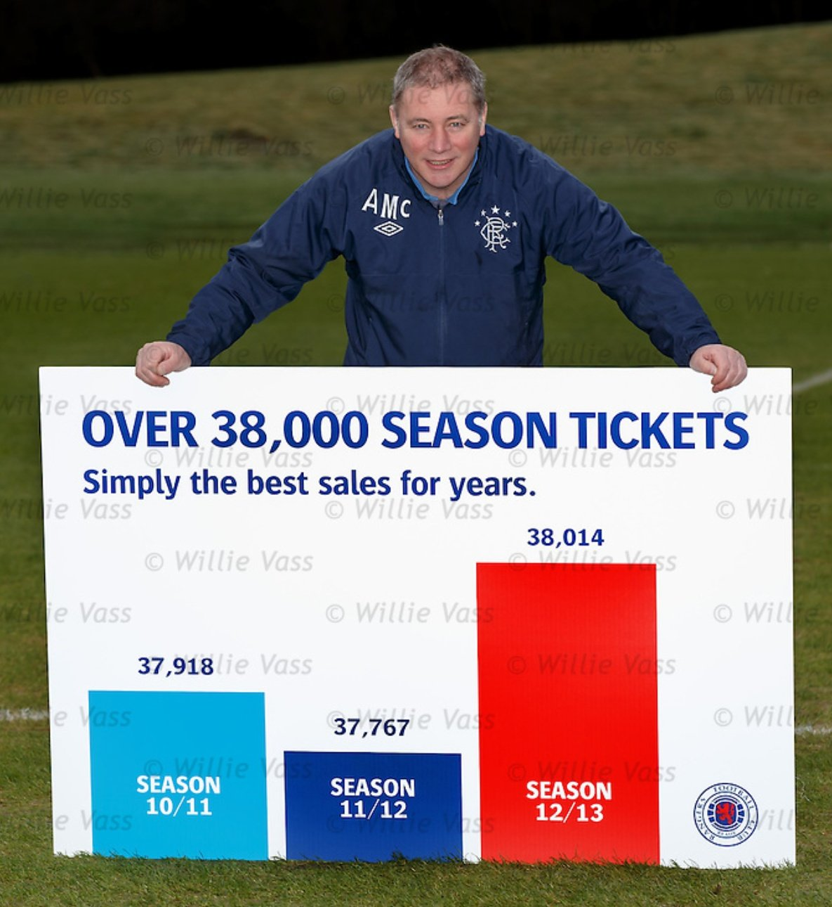

Maria Camila Gomez Fernandez | LinkedIn | GitHub | Project
From 1990 to 2022, real GDP per capita in the United States and United Kingdom grew steadily, with occasional dips like during the 2008 crisis. China saw rapid growth due to economic reforms, significantly boosting its per capita income. India experienced solid growth from liberalization, though more gradual than China. The Congo, however, faced slow growth due to political and economic challenges, keeping its GDP per capita among the lowest
The Philippines has made significant progress in gender parity, with strong female participation in education, health, and leadership roles. In contrast, Pakistan faces major challenges, ranking low due to cultural and social barriers that limit women's access to education and work. While the Philippines shows notable gender equality, Pakistan continues to struggle with deep-rooted societal constraints.
Between 2000 and 2022, Germany's unemployment rate fluctuated significantly. It peaked around 11% in 2005 due to economic challenges but steadily declined. By 2019, it reached a low of about 3.2% due to economic growth. The COVID-19 pandemic in 2020 briefly increased unemployment, but government support helped stabilize the rate, which remained low by 2022.
Real weekly wages in the UK from 2000 to 2024 have fluctuated significantly due to economic conditions and inflation. After steady growth in the early 2000s, wages stagnated following the 2008 financial crisis and struggled to recover in subsequent years. The COVID-19 pandemic further disrupted wage growth, although government support measures helped stabilize incomes. By 2024, while real weekly wages are anticipated to have improved, rising living costs and inflation continue to challenge workers' purchasing power.
Does the UK's future economic growth rely on exports? And if it does, what can we export to boost the country’s economy? The panel explores the strategies and policies needed to help boost the British export market, which is increasingly service-based.
Real exports in the UK from 1990 to 2024 have shown significant variability, influenced by economic trends, global market conditions, and trade policies. In the 1990s, exports experienced steady growth, bolstered by the expansion of the European Union and globalization. However, the 2008 financial crisis led to a sharp decline in exports, followed by a slow recovery in the 2010s. The UK's decision to leave the EU in 2016 introduced new trade dynamics, initially creating uncertainty that affected export performance. In the wake of the COVID-19 pandemic, exports faced further challenges but have gradually rebounded. By 2024, real exports are expected to have improved as the UK adapts to post-Brexit trade relationships and seeks new markets.
From 1990 to 2024, UK real imports experienced growth and fluctuations influenced by economic shifts. Imports rose in the 1990s and early 2000s due to economic expansion and EU integration. The 2008 financial crisis caused a temporary drop, followed by recovery. Brexit in 2016 brought trade uncertainties, affecting imports, and the COVID-19 pandemic in 2020 disrupted supply chains. By 2024, imports are expected to have rebounded as the UK adjusts to new trade conditions post-Brexit and post-pandemic.
To boost Britain’s export growth and strengthen its global position, policies should focus on forging new trade agreements, reducing barriers, and diversifying export markets. Investing in innovation and aligning regulatory standards with key partners can enhance competitiveness. Supporting infrastructure and resilient supply chains will further optimize trade, reinforcing the UK’s economic standing.
I chose a graph I found in X and replicated it in Vega and then displayed it correctly by adjusting the axes to identify that the change was not as drastic as the image showed.
The data I chose is easily accessible through Worldometer and I selected the GDP data for Colombia with the intention of performing an analysis of GDP behavior between 1993 and 2024.
The global distribution of GDP shows big differences between countries. Wealthy nations, mostly in North America, Europe, and parts of Asia, produce most of the world's GDP thanks to strong industries and infrastructure. On the other hand, poorer countries, especially in Africa and parts of Asia and Latin America, contribute much less due to limited resources and challenges like weak infrastructure. This highlights the large gap in wealth and economic opportunities worldwide.